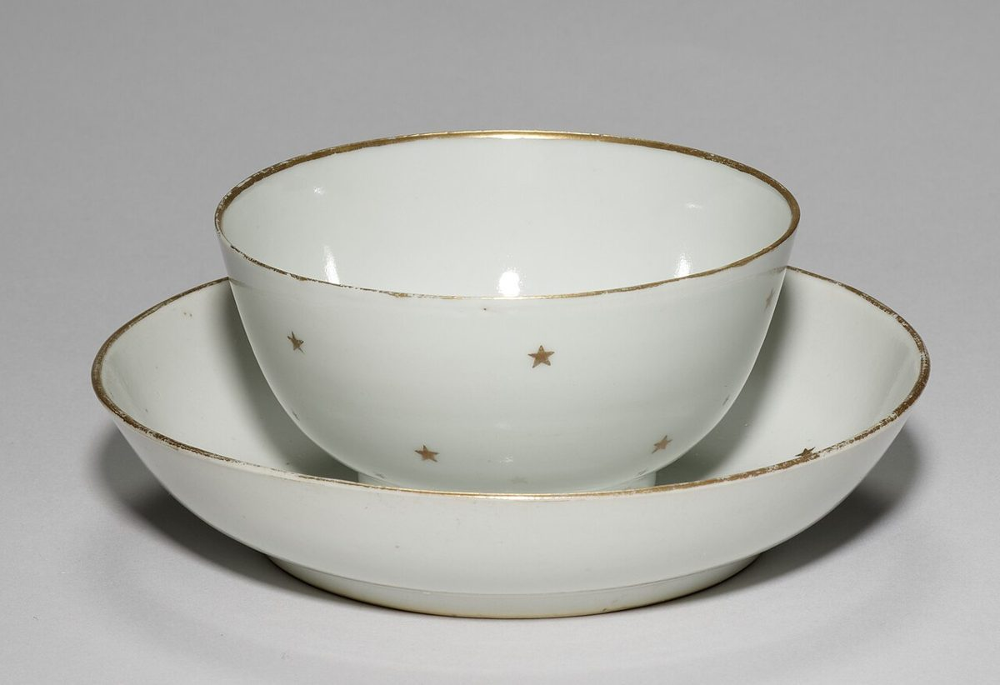

VOICE
口コミ(イメージ例)
制作側の創作による声です。実在のお客様の投稿ではありません。




写真はイメージです。お店のものではありません。
想像した声
こんな声があるかもしれません
イメージ例
Instagramをのぞいてみたくなる、気になる屋号です。
イメージ例
お店のページが公開されたら、まずInstagramを開いてみたいです。
イメージ例
どんなお店なのか、Instagramで確かめてみたいです。
上の3件は制作側の創作で、実在のお客様の投稿ではありません。投稿者名・評価点・件数は載せていません。